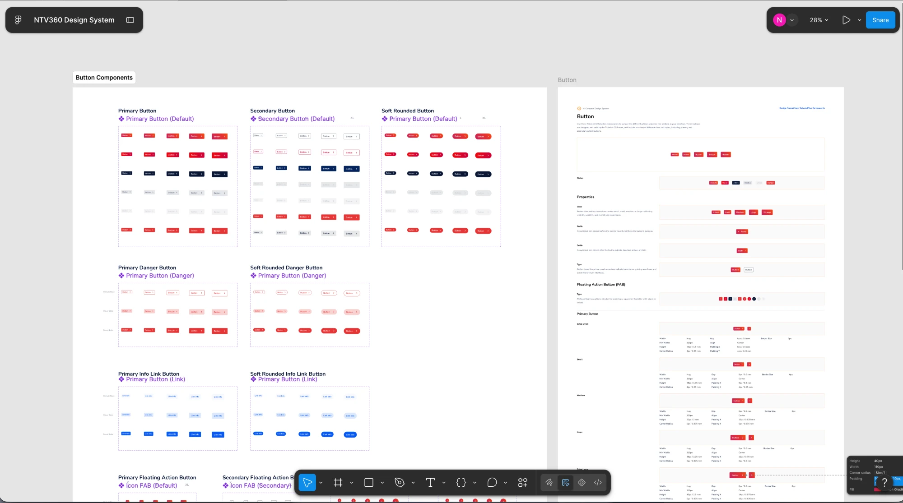
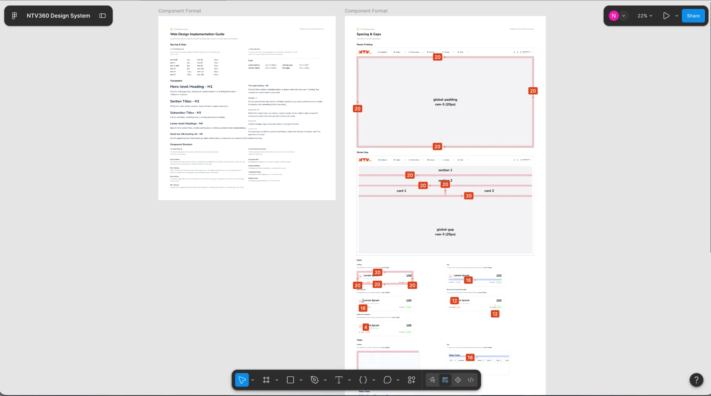
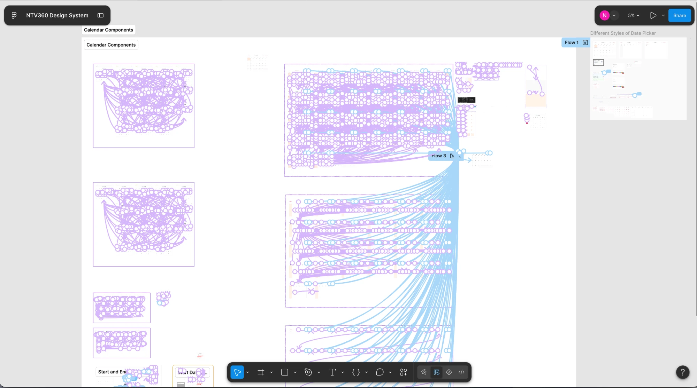
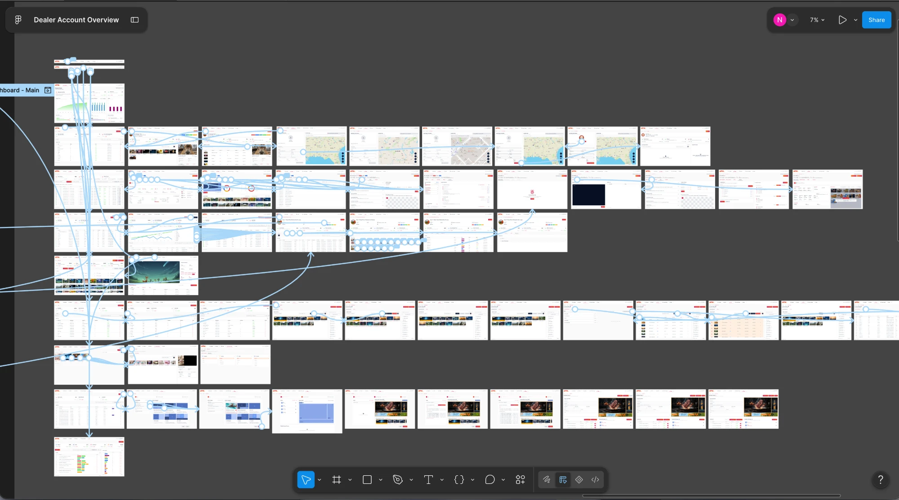
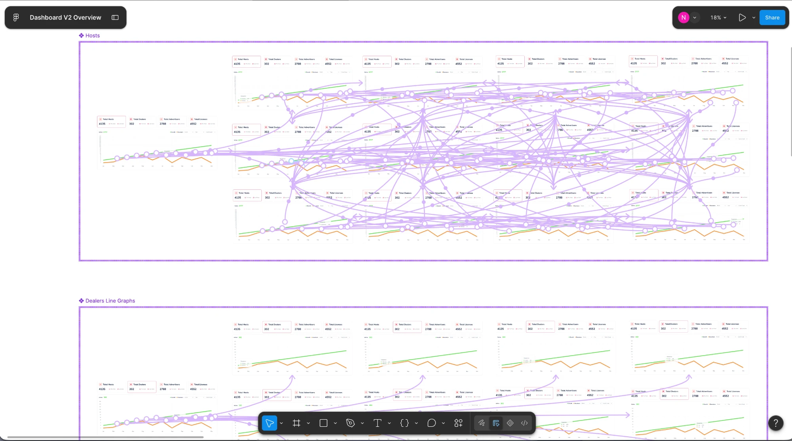

I design intuitive|
products for web and mobile.
Turning complex business requirements into scalable, user-centered design — with Figma, the Adobe suite, and AI-assisted workflows.
currently: design systems & AI-assisted research
Selected work
Personal Works
Design Process
01 · Discover
Interviews, then requirements into flows
Stakeholder interviews and discovery first, then the business requirements get translated into flows and journeys — deciding what the product has to do before anything is drawn.
02 · Structure
Journeys that say what happens next
Information architecture and end-to-end flows: a browse-to-book path, a shop-by-category and shop-by-condition system, a tender journey where every stage tells both sides what happens next.
03 · Systemise
Components, states and colour roles
The components get built in Figma first — states, variants and sizes, with colour roles and usage rules documented so the same decisions hold across web and mobile.
04 · Design
Wireframe to interactive prototype
Screens are composed from that component library rather than drawn from scratch — wireframe through hi-fi to a clickable prototype, with AI-assisted exploration cutting concept-to-prototype time roughly in half.
05 · Ship
Handoff, sprints, keeping it in step
Handoff to engineering and working inside the sprint team, then keeping the Figma source and the shipped components in step as the system keeps growing.
Working files from the NTV360 design system and the products built on it — the components first, then the screens assembled and prototyped from them.





I’m a Designer from Cebu City who enjoys turning complex ideas into clear, intuitive, and meaningful digital experiences. Beyond designing interfaces, I mentor junior and intern designers, helping them build a strong foundation in UI/UX—from typography, font hierarchy, spacing, and visual consistency to user flows, wireframing, prototyping, and usability thinking. I believe that while design tools and trends evolve, strong fundamentals remain at the heart of good design.
I work closely with product teams, front-end developers, QA, and other stakeholders to explore ideas, challenge assumptions, and create solutions that genuinely benefit the user. I especially enjoy building and manually prototyping experiences in Figma, where I can carefully think through interactions and user flows before they reach development. I also keep myself updated with emerging design trends and AI-powered tools, exploring how they can make the design process more efficient without losing the human side of design.
Outside of work, I enjoy attending design talks and seminars, learning from other creatives, and sharing my own experiences with the design community. When I encounter a creative block, I step away from the screen—usually for a little nature, sightseeing, or a change of scenery. I also enjoy crafting miniature pieces with polymer clay and painting in my free time. For me, creativity doesn’t only happen behind a screen; sometimes the best ideas come from simply stepping away from it.
BS Information Technology
Asian College of Technology International Educational Foundation, 2010—2014
Experience
2023 — NOW
Senior UI/UX Designer · NTV360
Leads design for web-based SaaS products end to end, mentors junior designers, and maintains the shared component library.
2023
Freelance UI/UX Designer
Wireframes, style guides and design components for client projects, presenting and walking each client through the reasoning behind the design.
2021 — 2022
UI/UX, Web & Graphics Designer · Håndværker PH
Wireframes, mock-ups, and prototypes for websites and mobile apps, plus the marketing graphics and motion that supported each release.
2020
UI/UX Designer · Teravault Software
Designed a complex web application from scratch in UXPin and Figma, working directly with an international client across time zones.
2019 — 2020
UI/UX Designer · Blueprint Business Solutions Corp.
Built designs from scratch against client requirements on CMS platforms, iterating with the team through each round of feedback.
2018 — 2019
UI/UX Designer · Hurdman Communications
Designed web application UX and UI — wireframing, prototyping and final screens in Sketch and InVision — presenting and iterating with the team designer and CEO.
2017 — 2018
Enterprise Web Builder · Mopro
Selected to design from scratch for US-based enterprise clients, working inside CMS platform constraints alongside international design teams.
2016 — 2017
Web & Graphics Designer · Sushi Digital
Designed website landing pages and their mobile views in Photoshop, and converted raster artwork to vector in Illustrator.
2015 — 2016
Web & Graphics Designer · Proweaver
Produced logos, flyers, brochures, business cards and website mock-up designs.
UX Design & Events
thanks for scrolling this far